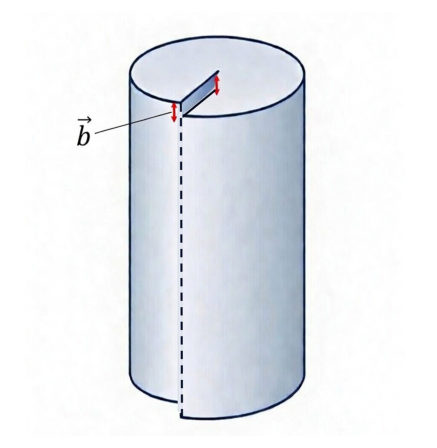

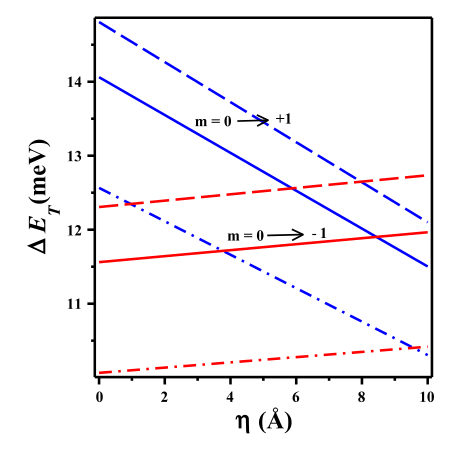

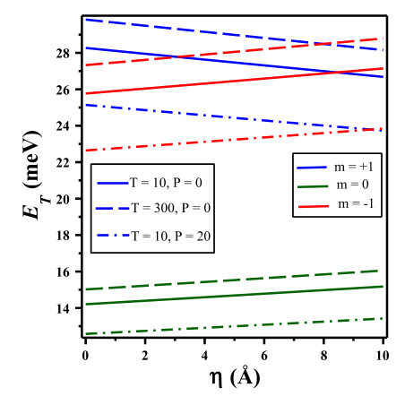
Authors: Nicolas Baù, Mitra Dowlatabadi, Tommaso Chiarotti, Massimo Capone, Antimo Marrazzo
Type: theory · Category: strongly correlated electrons · PDF: https://arxiv.org/pdf/2605.11211v1
Analysis basis: full PDF text, analyzed in chunks
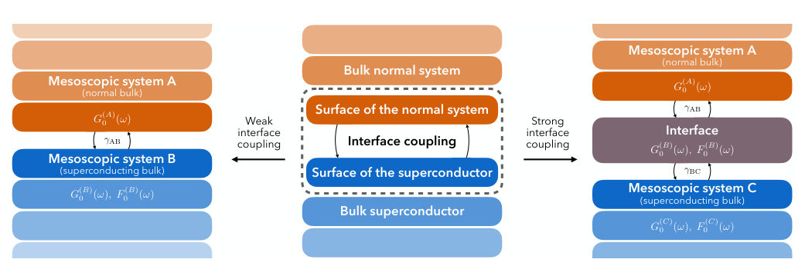
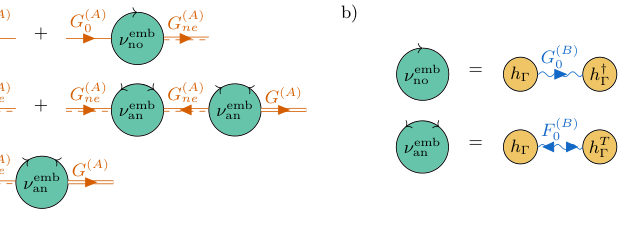
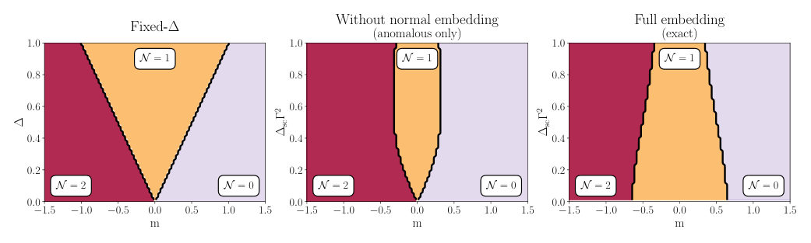
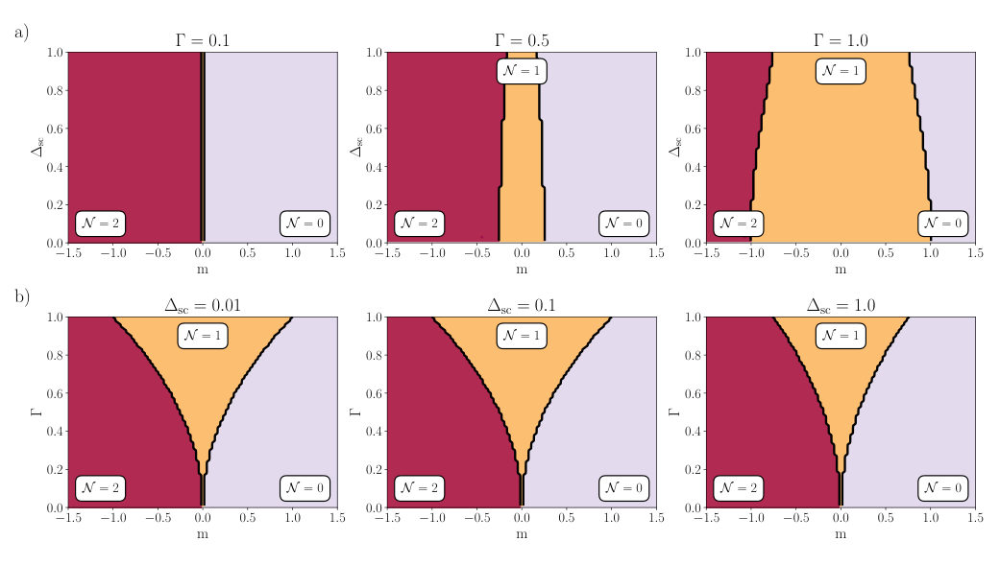
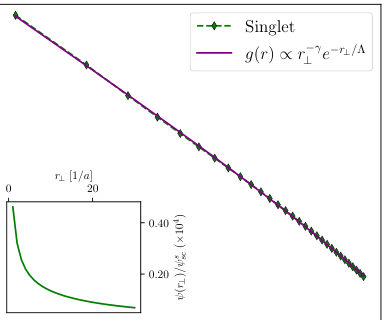
Summary. The authors present a new real-space embedding theory that allows for efficient, first-principles simulations of the superconducting proximity effect in large-scale mesoscopic systems. By decoupling microscopic electronic structure from mesoscopic physics, the method can capture proximity effects over hundreds of nanometers without the need for massive supercells. This provides a powerful tool for predicting the properties of topological and superconducting heterostructures.
Why it may be interesting. not directly relevant
Main problem. The difficulty of providing a predictive, first-principles description of the superconducting proximity effect at realistic interfaces due to the computational cost of simulating large, thick interface slabs.
Main result. The development of a scalable real-space dynamical embedding framework that bridges microscopic electronic structure and mesoscopic proximity physics, allowing for simulations of proximity effects extending hundreds of nanometers.
Method. A Green's-function framework based on real-space dynamical embedding using normal and anomalous self-energies, integrated with DFT, Wannier functions, and recursive schemes.
Model / system. The framework is applied to various systems including tight-binding models (QHZ and Fu-Kane-Mele), metal/superconductor interfaces, and first-principles simulations of NbSe2/CrBr3 van der Waals heterostructures.
Key observables. Local spectral functions, proximity lengths of singlet and triplet anomalous densities, Chern numbers, and layer-resolved density of states.
Important parameters / regimes. Interface coupling strength (Gamma), superconducting gap (Delta), spin-orbit coupling (SOC), and mesoscopic length scales.
Assumptions / limitations. The theory assumes the ability to partition the system into subsystems and uses the Bogoliubov-de Gennes framework to describe the superconducting state.
Figures summary. Figure 1 shows a schematic of N/SC heterostructures; Figure 2 illustrates the diagrammatic representation of the two-step renormalization process; Figure 3 compares topological phase diagrams using different approaches; Figure 7 and 8 show the NbSe2/CrBr3 interface and comparison with experimental STS data.
Paper structure. The paper moves from the theoretical derivation of the embedding formalism to validation via tight-binding models (QHZ and FKM), followed by application to mesoscopic 3D systems, and concludes with first-principles simulations of real NbSe2/CrBr3 heterostructures.
When a superconductor is placed in contact with a normal material, Cooper pairs penetrate the latter and induce superconductivity via the proximity effect. Despite its central role in quantum materials, superconducting devices and topological platforms, a predictive first-principles description of the proximity effect at realistic interfaces has remained computationally prohibitive so far. Here, we fill this gap by developing a Green's-function framework based on real-space dynamical embedding that enables first-principles simulations of superconducting proximity in mesoscopic systems. We show that the proximity effect admits a transparent diagrammatic formulation in terms of normal and anomalous embedding self-energies, which disentangle and quantify the distinct renormalization mechanisms generated by coupling to a superconducting bath. By combining this formalism with recursive schemes, we compute local spectral functions and proximity lengths extending over hundreds of nanometers into the bulk without resorting to thick interface slabs. We deploy the approach on tight-binding models (Qi-Hughes-Zhang and Fu-Kane-Mele), where we analyze mixed-parity superconductivity in topological insulators proximitized by $s$-wave superconductors, and on first-principles simulations of NbSe$_2$/CrBr$_3$ heterostructures based on density-functional theory and maximally-localized Wannier functions, the latter enabling direct comparison with scanning tunneling spectroscopy experiments. Our work provides a scalable and conceptually unified framework that bridges microscopic electronic structure and mesoscale proximity physics, enabling predictive atomistic simulations of superconducting interfaces.
Authors: Weiqiang Chen, Qiyao He, Kai Gong
Type: theory · Category: disordered systems and neural networks · PDF: https://arxiv.org/pdf/2605.11604v1
Analysis basis: full PDF text, analyzed in chunks
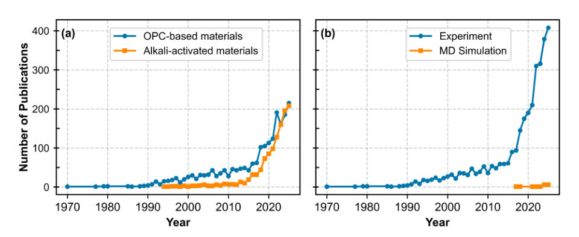
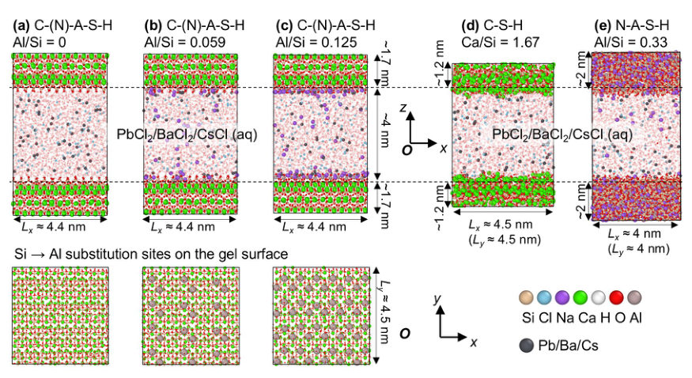
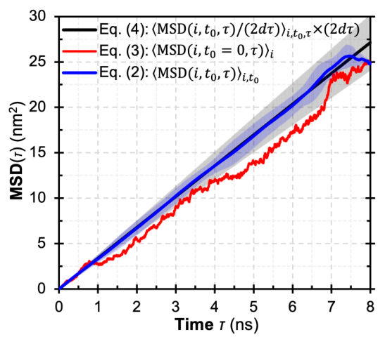
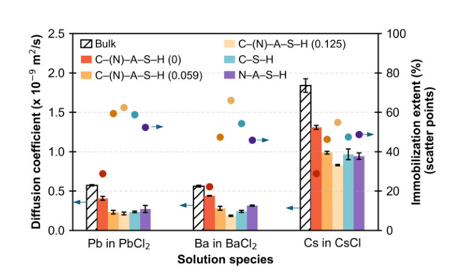
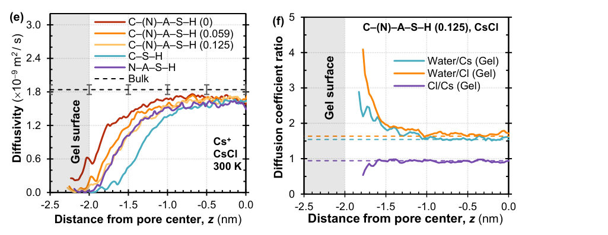
Summary. This study uses molecular dynamics to show how the chemical composition of cement nanopores, specifically the presence of aluminum, dictates how effectively heavy metals like lead and cesium are trapped. It introduces a new descriptor to quantify binding strength, providing a way to predict ion immobilization based on gel chemistry.
Why it may be interesting. not directly relevant
Main problem. The study aims to resolve the molecular-scale mechanisms governing the transport and immobilization of heavy-metal ions (Pb2+, Ba2+, and Cs+) within the nanopores of different cementitious gel chemistries.
Main result. The researchers found that ion mobility is significantly reduced in all nanopores, with C-(N)-A-S-H gels exhibiting the strongest retention due to Al-linked oxygen species, and introduced a 'relative total binding strength' (rTBS) descriptor that correlates with immobilization extent.
Method. Classical molecular dynamics simulations were performed using the ClayFF force field and the LAMMPS engine, incorporating analyses such as radial distribution functions, residence-time analysis, and 2D adsorption maps.
Model / system. The system consists of aqueous solutions of heavy-metal salts (PbCl2, BaCl2, and CsCl) confined within 1-8 nm wide slit-shaped nanochannels of various cementitious gels: C-S-H, C-(N)-A-S-H (with varying Al/Si ratios), and N-A-S-H.
Key observables. Ion diffusivity (pore-averaged and spatially resolved), ion-density profiles, radial distribution functions (RDFs), coordination numbers, and the relative total binding strength (rTB) descriptor.
Important parameters / regimes. Al/Si and Ca/Si ratios, pore width (1, 2, 4, and 8 nm), ionic charge, ionic radius, and ionic concentration.
Assumptions / limitations. The ClayFF force field is non-reactive, meaning the model captures physical adsorption and hydration but excludes chemical bond-breaking, bond-forming, or mineral precipitation.
Figures summary. Figure 1 shows text-mining trends of cement literature; Figure 2 illustrates the structural models of the various gel nanochannels; Table 1 summarizes the simulation cases.
Paper structure. The paper begins with a literature review of cementitious systems, followed by the description of the molecular models and simulation methods, then presents results on ion mobility and adsorption, and concludes with a discussion of the binding strength descriptor and mechanistic implications.
Cementitious materials are widely used for hazardous-waste encapsulation, yet the molecular mechanisms governing heavy-metal ion retention across different gel chemistries remain insufficiently resolved. Here, classical molecular dynamics simulations were employed to investigate the adsorption-controlled mobility of representative heavy-metal ions (Pb2+, Ba2+, and Cs+) within nanopores of C-S-H, C-(N)-A-S-H, and N-A-S-H gels. By combining pore-averaged diffusivity, spatially resolved diffusivity and residence-time analysis, ion-density profiles, two-dimensional adsorption maps, radial distribution functions, coordination analysis, and interfacial binding-strength descriptors, this study establishes a comparative atomistic framework linking gel surface chemistry to ion mobility suppression under nanoconfinement. Ion mobility is substantially reduced in all gel nanopores relative to bulk solutions, but the extent and mechanism of suppression vary strongly with gel chemistry. C-(N)-A-S-H with higher Al/Si ratios exhibits the strongest retention, driven by ion accumulation around Al-linked oxygen species via an ion-exchange-like mechanism with charge-balancing Na+. C-S-H immobilizes ions primarily through surface hydroxyl oxygens and Ca-mediated linkages, whereas N-A-S-H exhibits more distributed binding environments. Pb2+ and Ba2+ exhibit broadly similar immobilization mechanisms, whereas Cs+ shows more distinct, gel-dependent interactions with silicate and aluminosilicate oxygen sites. A relative total binding strength (rTBS) descriptor is introduced, showing a strong positive correlation with the extent of ion immobilization across gel types, ion species, and pore sizes examined. These results clarify gel-specific and ion-specific mechanisms controlling heavy-metal retention in idealized cementitious nanopores.
Authors: Simone Ritarossi, Alice Apponi, Orlando Castellano, José Lorenzana, Domenica Convertino, Camilla Coletti, Tien-Lin Lee, Francesco Offi, Alessandro Ruocco
Type: both · Category: other · PDF: https://arxiv.org/pdf/2605.12330v1
Analysis basis: full PDF text, analyzed in chunks
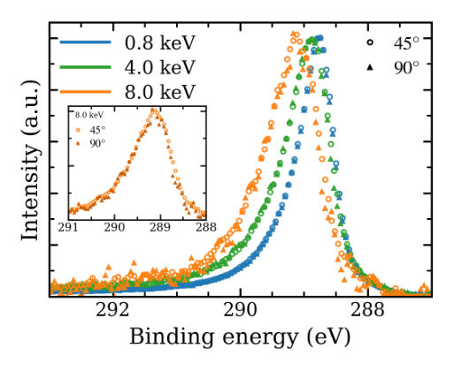
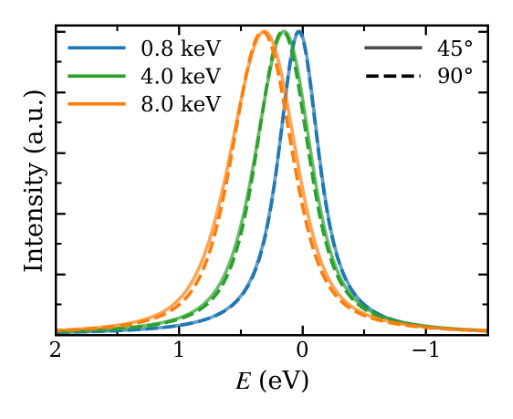
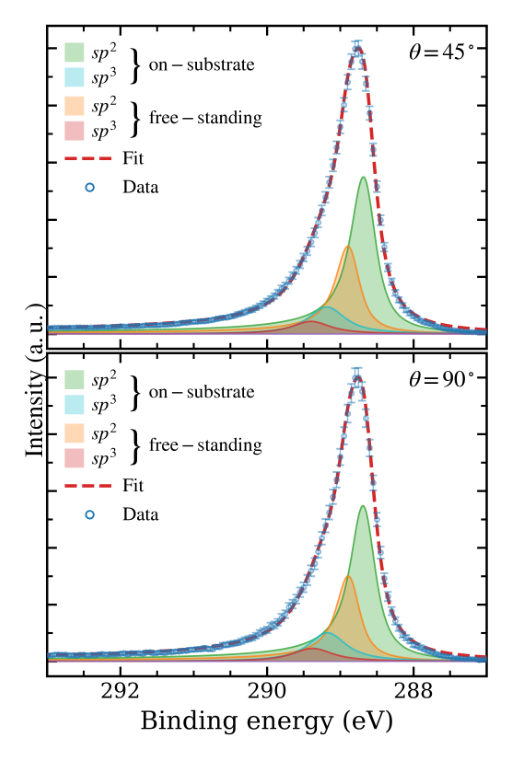
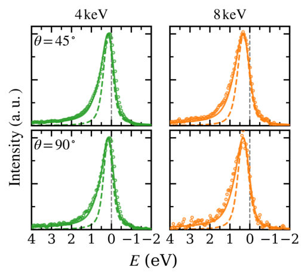
Summary. This paper investigates how nuclear recoil and many-body electronic effects compete to shape the X-ray photoemission spectra of graphene. By comparing experiments at high photon energies to theoretical models, the authors show that the observed spectral asymmetry requires an explicit treatment of the intrinsic electronic response convolved with lattice recoil. This provides a more accurate way to interpret high-energy spectroscopy in 2D materials.
Why it may be interesting. not directly relevant
Main problem. The study aims to disentangle the interplay between nuclear recoil and intrinsic electronic asymmetry in the C 1s core-level photoemission spectra of graphene at hard X-ray energies.
Main result. The researchers demonstrate that the spectral line shape cannot be described by a simple symmetric recoil model and must instead be treated as a convolution of a phonon recoil kernel with the intrinsic many-body electronic response.
Method. The study combines hard X-ray photoemission spectroscopy (HAXPES) at photon energies from 0.8 keV to 8 keV with a theoretical model using the Fujikawa-Takata cumulant formalism and an explicit electronic convolution approach.
Model / system. The physical system is monolayer graphene. The theoretical framework uses an adiabatic/Born-Oppenheimer approximation to separate electronic and nuclear degrees of freedom, employing an anisotropic vibrational density of states and a Doniach-Sunjic-based electronic line shape.
Key observables. C 1s core-level spectral line shape, peak shifts (centroid displacements), and spectral broadening.
Important parameters / regimes. Photon energies (0.8, 4, and 8 keV), emission angles (45 and 90 degrees), temperature (300 K), and recoil energy scale (up to ~356 meV).
Assumptions / limitations. The intrinsic electronic line shape is assumed to be photon-energy-independent; the model assumes the Born-Oppenheimer and harmonic approximations; the lattice dynamics are treated via an anisotropic phonon bath.
Figures summary. Figure 1 shows C 1s spectra at different photon energies and angles; Figure 2 shows theoretical spectra; Figure 3 shows the 0.8 keV reference spectrum and its fit; Figure 4 compares experimental data against baseline and proposed convolution models.
Paper structure. The paper introduces the scientific problem of spectral asymmetry, describes the experimental setup and sample preparation, presents the theoretical modeling of recoil and electronic response, compares different models against experimental data, and concludes with the necessity of the convolution approach.
Hard-x-ray C 1s photoemission from monolayer graphene probes a regime in which nuclear recoil and intrinsic electronic asymmetry contribute on comparable energy scales to the observed spectral line shape. Here we combine experiment and modeling over the photon-energy range 0.8 keV--8 keV to resolve this interplay quantitatively. A graphene-specific implementation of the Fujikawa--Takata cumulant formalism, based on an anisotropic vibrational density of states constrained by first-principles phonon calculations, captures the expected recoil scaling with photon energy and emission geometry but fails to reproduce the pronounced asymmetric tails of the measured spectra. To overcome this limitation, we introduce an explicit electronic convolution model in which an intrinsic, photon-energy-independent electronic line shape extracted from near-recoilless 0.8 keV data is convolved with a phonon recoil kernel carrying the full dependence on photon energy and emission angle. This approach reproduces both the measured line-shape evolution and the observed centroid shifts across the explored energy range without refitting the spectra at higher photon energies. The results show that recoil in graphene cannot be described by a baseline treatment in which the phonon recoil kernel is combined only with symmetric lifetime broadening, but must be treated together with the intrinsic many-body electronic response of the C 1s line.
Authors: Vinod Kumar, Shweta Kumari, Surender Pratap
Type: theory · Category: other · PDF: https://arxiv.org/pdf/2605.12371v1
Analysis basis: full PDF text, analyzed in chunks



Summary. This paper explores how structural defects like screw dislocations can be used to tune the optical properties of GaAs quantum wires. By manipulating temperature, pressure, and magnetic fields, one can control the symmetry and magnitude of nonlinear optical responses, which is crucial for developing advanced optoelectronic devices.
Why it may be interesting. not directly relevant
Main problem. The study investigates how a screw dislocation, combined with temperature, hydrostatic pressure, and an axial magnetic field, influences the linear and third-order nonlinear optical response of a GaAs quantum wire.
Main result. The screw dislocation breaks the symmetry between angular momentum states, causing a redshift and suppression for the m = 0 to +1 transition and a blueshift and enhancement for the m = 0 to -1 transition. Temperature and pressure further tune these optical responses through shifts in effective mass and dielectric permittivity.
Method. The researchers use a torsion-modified geometric framework and density-matrix formalism to obtain exact analytical solutions of the Schrödinger equation in terms of Whittaker functions.
Model / system. A parabolic GaAs cylindrical quantum wire with a screw dislocation characterized by a dislocation parameter eta. The model incorporates a torsion-modified metric and accounts for pressure- and temperature-dependent material properties.
Key observables. Linear and third-order nonlinear absorption coefficients, and relative changes in the linear and third-order refractive index.
Important parameters / regimes. Dislocation parameter (eta), temperature (T), hydrostatic pressure (P), axial magnetic field (B), and incident light intensity (I).
Assumptions / limitations. The radial confinement is modeled via a parabolic potential; the wire is assumed to be much longer than its radius (L >> R); the axial wave number is fixed at a small value (kz = 0.01 A^-1).
Figures summary. Figure 1 shows a schematic of the screw dislocation; Figures 7, 8, and 9 display the absorption coefficient and refractive index changes for different transition channels under varying external parameters.
Paper structure. The paper introduces the physical system and dislocation model, presents the analytical solution of the Schrödinger equation, evaluates the optical response using density-matrix formalism, and analyzes the effects of temperature, pressure, magnetic field, and dislocation parameter on the results.
We investigate the influence of a screw dislocation, characterized by the dislocation parameter, on the optical response of a parabolic GaAs cylindrical quantum wire under the combined effects of temperature, hydrostatic pressure, and the axial magnetic field. Using a torsion-modified metric together with pressure- and temperature-dependent material properties, namely the effective mass and dielectric permittivity, we obtain exact solutions of the Schrödinger equation in terms of Whittaker functions. The screw dislocation introduces a \(k_z\)-dependent coupling that breaks the symmetry between the angular momentum states \(m\) and \(-m\) and modifies the centrifugal term in the effective potential. Based on the resulting eigenstates, we evaluate the linear and third-order nonlinear optical absorption coefficients, as well as the corresponding refractive index changes, for the dipole-allowed transitions \(m = 0 \to +1\) and \(m = 0 \to -1\). Our results show that increasing the dislocation parameter produces a pronounced redshift and suppresses the resonance amplitude for the \(m = 0 \to +1\) transition, whereas the \(m = 0 \to -1\) transition exhibits a blueshift accompanied by peak enhancement. We further find that increasing temperature shifts the resonances toward higher photon energies and enhances their amplitudes, while hydrostatic pressure causes a redshift and reduces the peak intensity for both transitions. In addition, the magnetic field strengthens the optical response and induces a blueshift for the \(m = 0 \to +1\) transition, whereas the opposite behavior is obtained for the \(m = 0 \to -1\) transition. We have also examined the behavior of the refractive index changes, which exhibit analogous asymmetric dependence on the dislocation parameter.
Authors: Natalia Gonzalez-Vazquez, Eylül Suadiye, Eberhard Goering, Ruben O. Miranda-Rosales, Hilda David, Frank Thiele, Julia Unangst, Andrew K. Schulz, Gunther Richter
Type: both · Category: other · PDF: https://arxiv.org/pdf/2605.12283v1
Analysis basis: full PDF text, analyzed in chunks
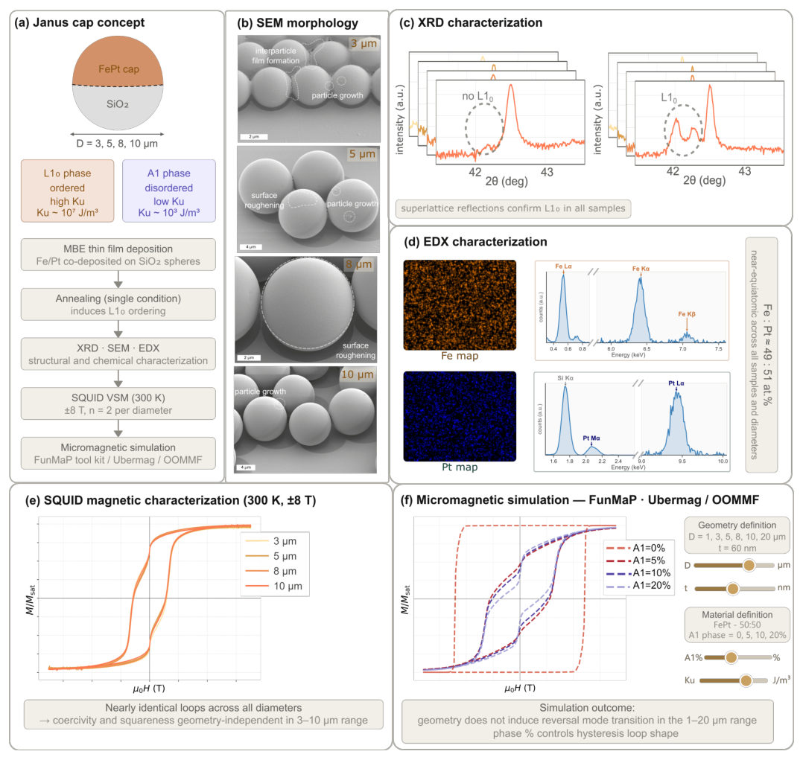
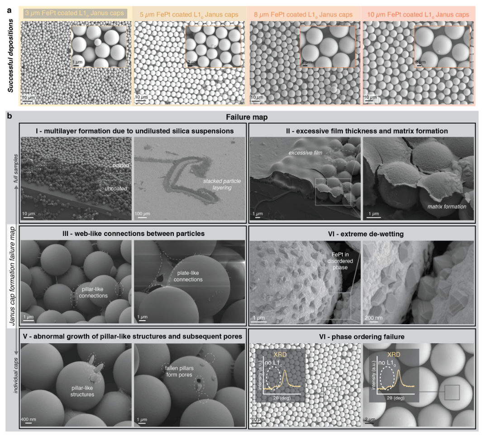
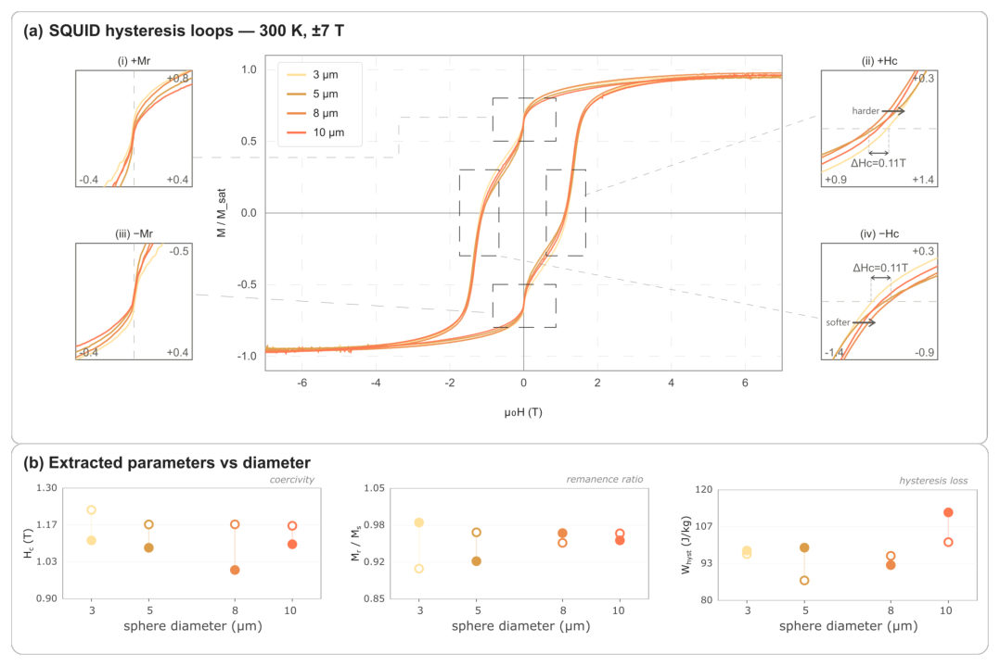
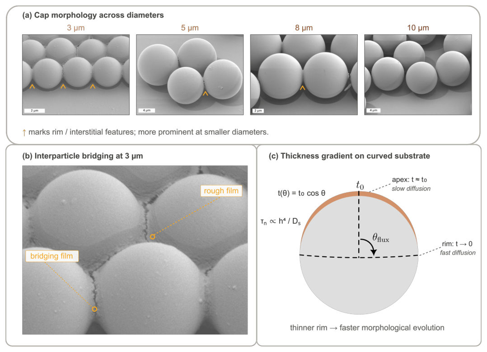
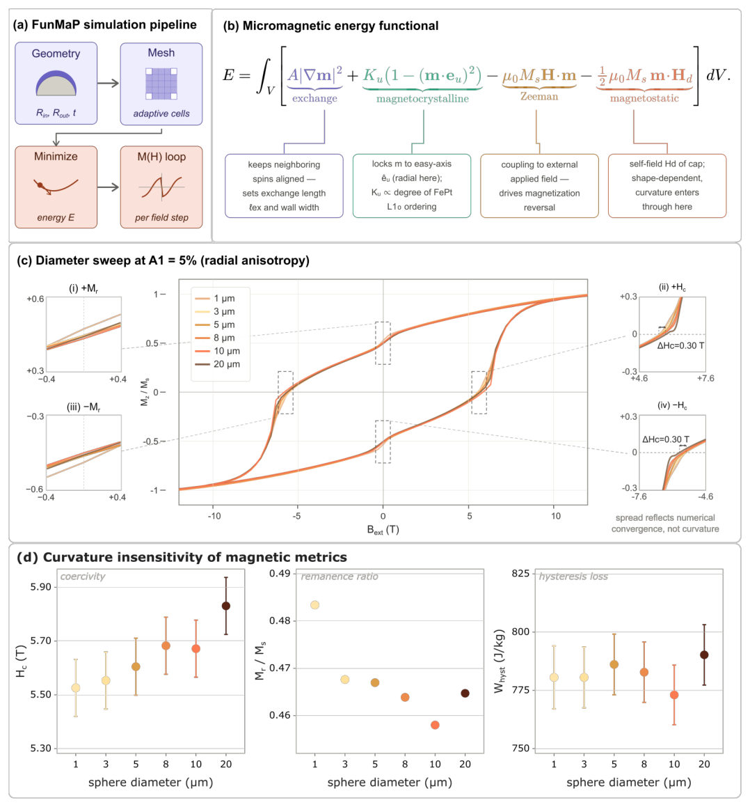
Summary. This study investigates whether the curvature of micrometer-scale FePt Janus particles affects their magnetic properties. The researchers found that magnetic behavior is independent of particle size and is instead primarily controlled by the chemical ordering of the FePt phase. This provides important design guidelines for creating programmable magnetic micro-systems.
Why it may be interesting. not directly relevant
Main problem. Determining whether particle curvature (diameter) or chemical ordering (L10 vs A1 phase) is the primary driver of magnetic tunability in micrometer-scale FePt Janus particles.
Main result. Magnetic properties like coercivity and remanence are independent of particle curvature in the micrometer regime, being instead governed by the degree of chemical ordering and material morphology.
Method. The study combines experimental SQUID magnetometry, SEM, XRD, and EDX with micromagnetic simulations using the FunMaP framework.
Model / system. FePt-coated SiO2 Janus particles with hemispherical caps, featuring a mixture of ordered L10 and disordered A1 phases, operating in the locally planar limit where the exchange length is much smaller than the particle radius.
Key observables. Coercivity (Hc), remanence ratio (Mr/Ms), and hysteresis loop shape.
Important parameters / regimes. Particle diameter (1-20 micrometers), thickness (60 nm), exchange length, and A1 phase fraction.
Assumptions / limitations. The system is treated in the locally planar limit; simulations assume idealized caps and radial anisotropy distribution.
Figures summary. Fig 1: Workflow of fabrication and characterization; Fig 2: SEM imaging and fabrication failure modes; Fig 3: Diameter-independent SQUID hysteresis loops; Fig 4: Morphological evolution and thickness gradients; Fig 5: Micromagnetic simulations of diameter-independent reversal; Fig 6: Impact of A1 phase fraction and anisotropy configuration on magnetism.
Paper structure. The paper introduces the problem of curvature-driven magnetism, details the experimental synthesis and characterization of FePt Janus particles, presents magnetometry results showing diameter independence, uses micromagnetic simulations to validate the lack of curvature effects, and concludes that chemical ordering is the dominant tuning mechanism.
Magnetic Janus particles enable remote actuation in biomedical, microfluidic, and materials applications. While curvature-driven magnetic effects are well known at the nanoscale, their influence on magnetization reversal in micrometer-sized particles is still unclear. In this work, we combine experiments and micromagnetic simulations to study curvature-dependent magnetism in FePt-coated Janus particles with diameters ranging from 3-10 microm, and extend the analysis to 1-20 microm through simulations. Structural and crystallographic characterization confirms continuous FePt coatings with near-equiatomic composition and partial L1_0 ordering. Magnetometry measurements show nearly unchanged hysteresis behavior across particle sizes, with coercivity remaining approximately constant m_0Hc = 1.13 +/- 0.05 T, pooled n = 8). Statistical analysis reveals no significant dependence of coercivity or remanence on particle diameter (p = 0.61 for Hc and p = 0.85 for Mr/Ms). To explain these results, we introduce FunMaP, an open-source micromagnetic simulation framework that enables direct comparison between experiments and idealized FePt caps. Simulations confirm that curvature has little effect on magnetization reversal at micrometer scales, consistent with a locally planar magnetic limit where the exchange length is much smaller than the particle radius. In contrast, differences in chemical ordering strongly affect hysteresis shape and coercivity. These findings demonstrate that magnetic behavior in micrometer-scale FePt Janus particles is governed mainly by material ordering rather than curvature. This work establishes a quantitative boundary for curvature-dependent magnetism and provides design guidelines for programmable magnetic micro-systems.
Authors: Sambhu G Nath, Subhadip Manna, R K Gopal, Chiranjib Mitra
Type: experiment · Category: other · PDF: https://arxiv.org/pdf/2605.11113v1
Analysis basis: full PDF text, analyzed in chunks
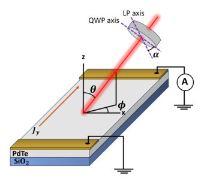
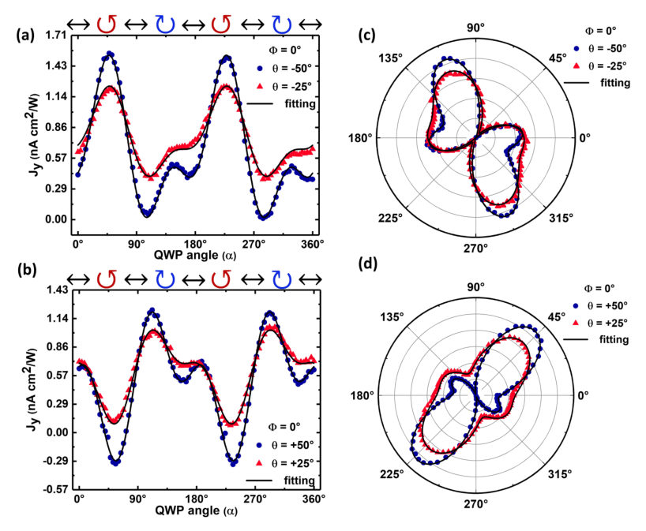
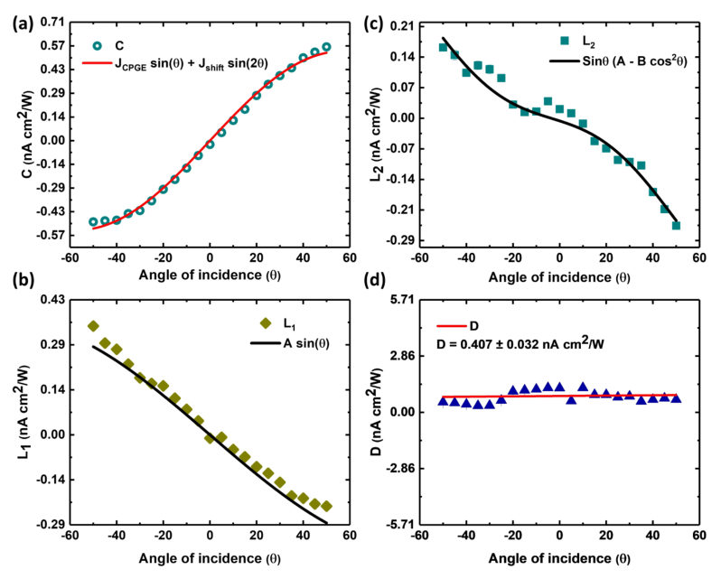
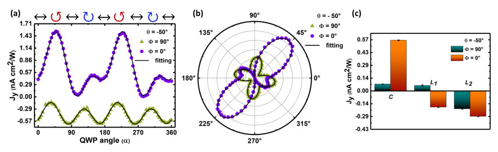
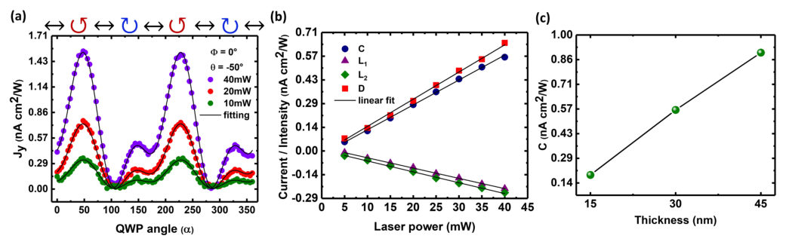
Summary. This paper demonstrates that the momentum of incident photons can dynamically break the inversion symmetry of a centrosymmetric Dirac semimetal. This allows for the observation of previously forbidden nonlinear optical effects, providing a new way to probe quantum geometric properties in topological materials.
Why it may be interesting. not directly relevant
Main problem. In centrosymmetric Dirac semimetals, second-order nonlinear photocurrents are forbidden by time-reversal and inversion symmetries. The study investigates how photon momentum transfer can act as a dynamic symmetry-breaking mechanism to enable these forbidden responses.
Main result. The researchers demonstrate that finite photon momentum transfer in PdTe enables nonlinear optical responses, including a helicity-dependent current that scales with film thickness, proving a robust bulk contribution rather than just surface effects.
Method. The study uses polarization-resolved photocurrent measurements with a continuous wave laser, varying the incident angle and polarization state (using a quarter-wave plate) to resolve different current components.
Model / system. The physical system is PdTe, a centrosymmetric Dirac semimetal, prepared as thin films deposited on Al2O3 substrates via Pulsed Laser Deposition.
Key observables. Transverse photocurrent density (Jy), helicity-dependent component (C), and helicity-independent components (L1, L2).
Important parameters / regimes. Incident angle (theta), polarization angle (alpha), film thickness, and laser power.
Assumptions / limitations. The analysis assumes the observed nonlinearities are driven by photon momentum transfer rather than intrinsic structural asymmetry or strain-induced symmetry breaking.
Figures summary. Fig 1 shows the experimental geometry; Fig 2 displays normalized photocurrent density and polar plots vs polarization angle; Fig 4 shows polarization-dependent modulation and extracted components; Fig 5 shows power and thickness dependence; Fig 6 and 7 show HWP rotation and angular dependence.
Paper structure. The paper introduces the symmetry problem, describes the experimental setup and PdTe film growth, presents polarization-resolved measurements to extract current components, performs thickness and angular dependence analysis to distinguish bulk from surface effects, and concludes with potential applications.
In centrosymmetric Dirac semimetals, second order nonlinear photocurrents are forbidden by the coexistence of time-reversal and inversion symmetries. Here, we demonstrate that finite photon momentum transfer acts as a dynamic symmetry breaking mechanism in PdTe, enabling nonlinear optical responses that are nominally forbidden in the centrosymmetric bulk. Through polarization sensitive measurements, we resolve distinct contributions from the circular photogalvanic effect (CPGE), geometric shift currents, and photon drag mediated processes. We show that the helicity dependent current vanishes at normal incidence and reverses sign with the angle of incidence, reflecting the coupling between photons and spin polarized surface states. Crucially, thickness dependent analysis reveals that the helicity dependent photocurrent component C scales with film thickness, establishing a robust bulk contribution enabled by momentum transfer. This confirms that incident photons provide the directional axis required to probe interband quantum geometry, rather than the response originating solely from surface states or strain. Our results demonstrate that optical excitation can dynamically reduce the effective symmetry of the system, enabling access to quantum geometric tensors and establishing PdTe as a promising platform for exploring nonequilibrium dynamics governed by photon momentum in high symmetry topological materials.
Authors: Maximilian Black, Yaser Abdi, Prabhdeep Singh, Bharti Garg, Zahra Alavi, Mohammadreza Alikhanim, Mohammad Hossein Salemi Seresht, Fatemeh Chahshouri, Masoud Taleb, Nahid Talebi
Type: both · Category: other · PDF: https://arxiv.org/pdf/2605.11173v1
Analysis basis: full PDF text, analyzed in chunks
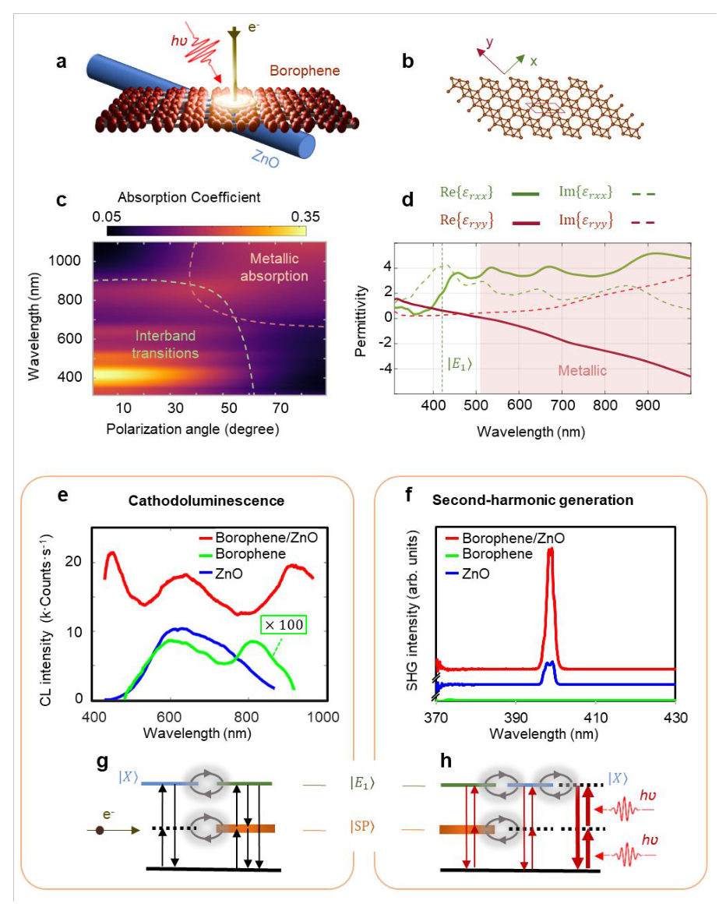
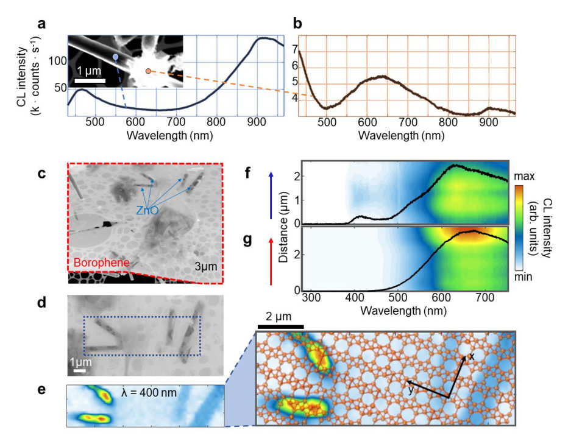
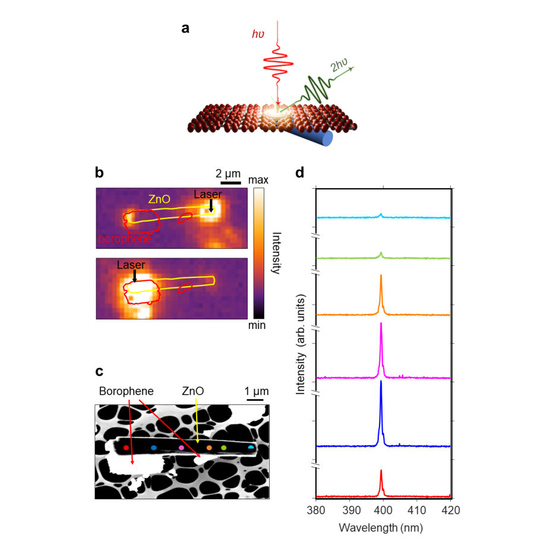
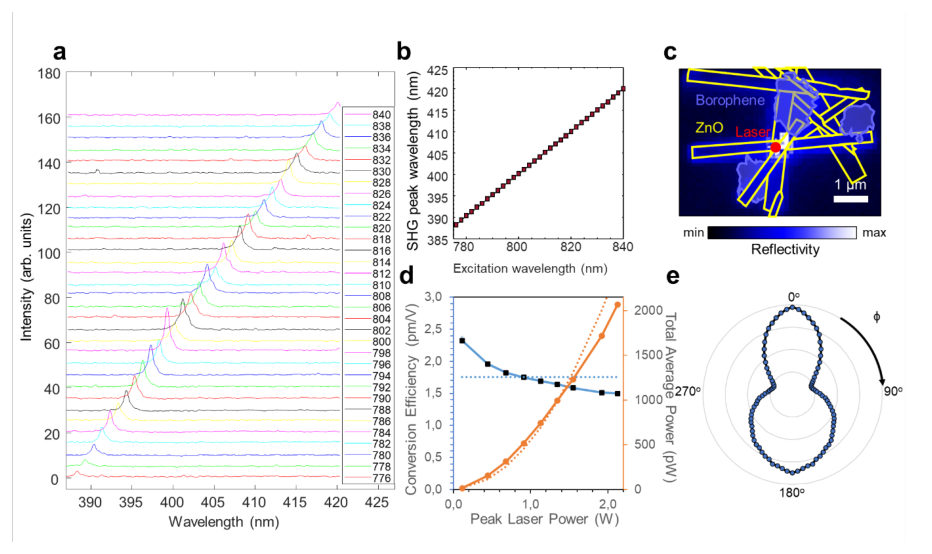
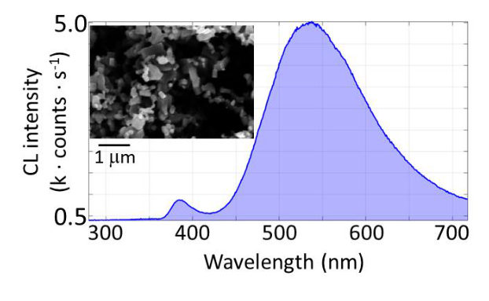
Summary. This paper demonstrates that coupling the plasmonic properties of borophene with the excitonic properties of ZnO nanorods significantly boosts nonlinear optical responses. This enhancement is driven by plasmon-exciton coupling that enables efficient frequency conversion and two-photon absorption. The findings provide a strategy for controlling nonlinear light-matter interactions in low-dimensional heterostructures.
Why it may be interesting. not directly relevant
Main problem. Nonlinear optical processes in low-dimensional materials are often weak or symmetry-forbidden, which limits their application in nanoscale light sources and on-chip frequency conversion.
Main result. The integration of anisotropic borophene and excitonic ZnO nanorods creates a hybrid structure where plasmon-exciton coupling enhances the second-order nonlinear response and cathodoluminescence by two orders of magnitude.
Method. The study uses CVD and hydrothermal synthesis for heterostructure fabrication, combined with cathodoluminescence (CL) spectroscopy, second-harmonic generation (SHG) measurements, and electromagnetic modeling.
Model / system. A hybrid heterostructure consisting of a single atomic layer of anisotropic borophene (metallic/semiconducting) integrated onto ZnO nanorods (direct-bandgap semiconductor).
Key observables. Cathodoluminescence (CL) emission intensity, Second-Harmonic Generation (SHG) intensity, second-order susceptibility (chi-2), and polarization-dependent absorption spectra.
Important parameters / regimes. Wavelengths (400 nm, 800 nm, 850 nm), electron acceleration voltage (5 kV to 20 kV), and beam current (200 pA to 10 nA).
Assumptions / limitations. The calculation of second-order susceptibility assumes the emission area is equal to the illumination area, and the borophene layer is modeled as a conductive layer with negligible thickness.
Figures summary. Figure 1 shows the hybrid structure schematic, borophene atomic structure, and calculated polarization-dependent absorption/permittivity. Figure 2 and 3 present CL spectra and site-selective SHG measurements. Supplementary figures provide SEM/TEM imaging, XRD, and SAED patterns.
Paper structure. The paper introduces the problem of weak nonlinearity in 2D materials, describes the synthesis and characterable properties of the borophene/ZnO hybrid, presents experimental evidence of enhanced CL and SHG via spectroscopy, provides electromagnetic modeling to explain the coupling mechanism, and concludes with structural characterization.
Nonlinear optical processes in low dimensional materials are often weak or symmetry forbidden, limiting their use in nanoscale light sources and on chip frequency conversion. Here, we show that combining two weakly nonlinear systems, anisotropic borophene and excitonic zinc oxide, yields an enhanced and resonant nonlinear response. In borophene ZnO heterostructures, cathodoluminescence reveals a two orders of magnitude enhancement at 400 nm and 800 nm, due to an enhanced two photon absorption process. Under tunable near infrared excitation, a clear second harmonic signal emerges with quadratic power dependence and strong resonance near 800 nm. We attribute this to nonlinear plasmon exciton coupling, which reshapes the excitonic response and enables efficient hybrid pathways for frequency conversion. These results establish anisotropic plasmon exciton hybridization as a route to controlling nonlinear optical responses in low dimensional heterostructures.
Authors: Shubhanshu Karoliya, Ekta, Gargee Sharma
Type: theory · Category: disordered systems and neural networks · PDF: https://arxiv.org/pdf/2605.11066v1
Analysis basis: full PDF text, analyzed in chunks
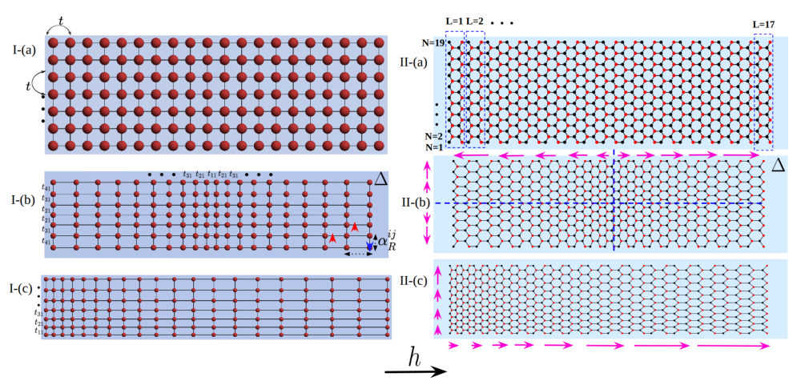
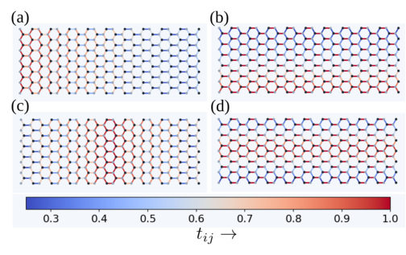
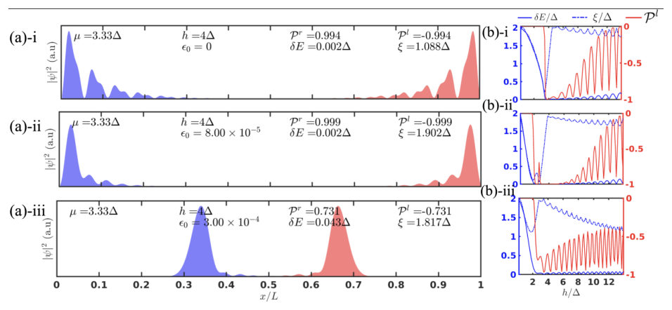
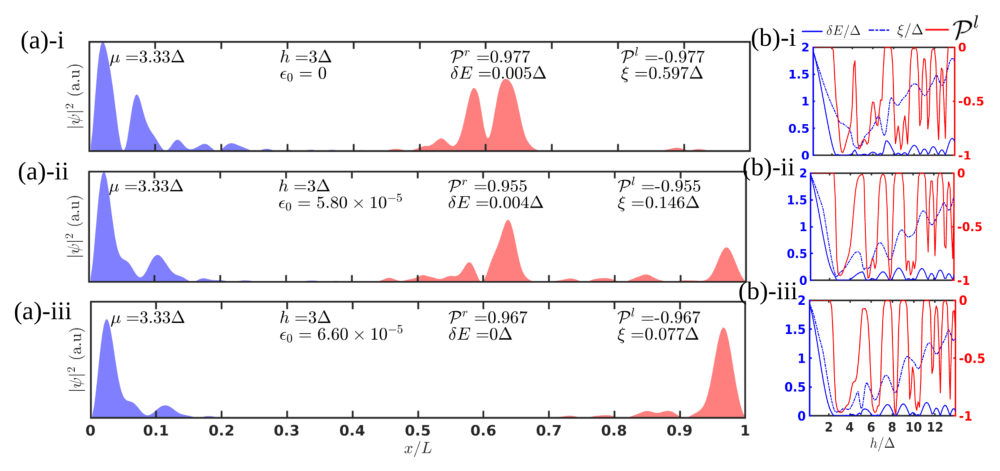
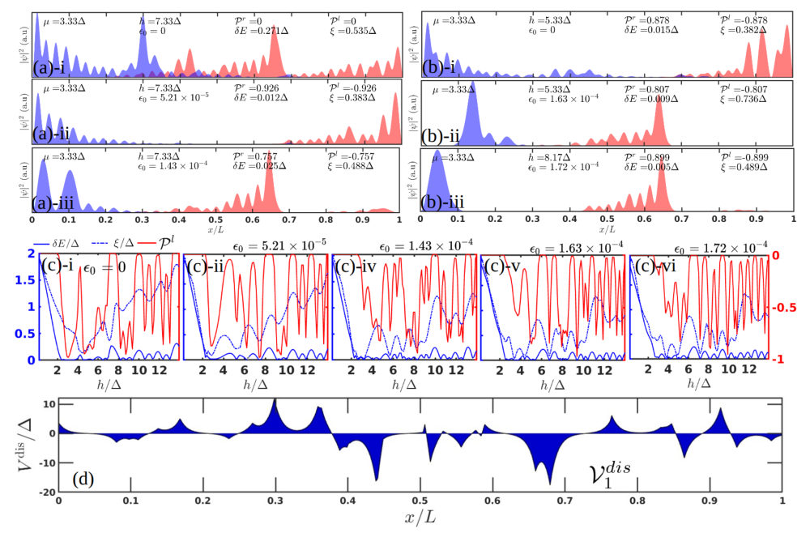
Summary. This paper demonstrates that mechanical strain can be used as a systematic tuning parameter to distinguish true Majorana bound states from trivial Andreev bound states. By manipulating the spatial overlap of wavefunctions, strain can stabilize topological modes and convert disorder-induced trivial excitations into robust, well-separated Majoranas.
Why it may be interesting. not directly relevant
Main problem. The difficulty in distinguishing true topological Majorana bound states (MBSs) from trivial, low-energy Andreev bound states (ABSs) that mimic Majorana signatures in disordered superconductor-semiconductor heterostructures.
Main result. Spatially nonuniform strain acts as a control parameter that can interconvert MBSs and psABSs, specifically enabling the conversion of disorder-induced trivial states into robust, well-separated Majorana modes.
Method. Numerical simulations using tight-binding Bogoliubov-de Gennes (BdG) Hamiltonians combined with an analytical framework based on position-dependent topological mass and strain-driven domain-wall motion.
Model / system. One-dimensional semiconductor nanowires and graphene nanoribbons featuring proximity-induced s-wave superconductivity, Rashba spin-orbit coupling, Zeeman fields, and spatial disorder.
Key observables. Low-energy spectrum, Majorana polarization (MP), energy splitting, bulk-gap, and spatial probability density of wavefunctions.
Important parameters / regimes. Strain amplitude (epsilon), Zeeman field (h), superconducting gap (Delta), chemical potential (mu), and disorder potential (V_dis).
Assumptions / limitations. The study assumes a lattice discretization (tight-binding approximation) and uses a 'low-strain' approximation where strain is treated as a smooth, position-dependent renormalization of local parameters.
Figures summary. Figure 1 shows the schematic of nanowire and graphene systems under different strain configurations; Figure 2 illustrates spatial modulation of hopping amplitudes; Figure 3 and 4 show the evolution of Majorana components, energy splitting, and polarization in clean and disordered nanowires; Figure 8-13 detail the effects of symmetric and asymmetric strain on quasi-1D strips and graphene nanoribbons.
Paper structure. The paper introduces the problem of Majorana identification, describes the tight-binding BdG model and strain implementation, presents numerical results for 1D nanowires and graphene nanoribbons, develops an analytical framework for crossovers, and concludes with the implications for topological quantum computing.
The unambiguous identification of topological Majorana-bound states (MBSs) in superconducting hybrid systems is hindered by trivial low-energy excitations, especially partially separated Andreev bound states (psABSs), which can mimic Majorana signatures. Here we show that spatially nonuniform strain offers a systematic route to control and interconvert these low-energy states. Using tight-binding Bogoliubov--de Gennes simulations, we study one-dimensional semiconductor nanowires and graphene nanoribbons with superconductivity, Rashba spin-orbit coupling, Zeeman fields, and disorder. We find that even weak strain can qualitatively reshape the low-energy spectrum by modifying effective band parameters and redistributing wavefunction weight. In nanowires, strain tunes the spatial overlap of Majorana components and shifts the topological phase boundary, enabling controlled crossovers between trivial states, psABSs, and topological MBSs. In graphene nanoribbons, where multiband effects and edge states produce a dense, hybridized low-energy spectrum, strain suppresses subband mixing, lifts degeneracies, and stabilizes boundary-localized modes. In both platforms, we identify regimes where disorder-induced psABSs are converted into well-separated and robust MBSs through strain-enhanced nonlocality. We further develop an analytical framework based on a position-dependent topological mass and strain-driven domain-wall motion, which captures the physical mechanism of these crossovers and yields a real-space criterion for the emergence and stability of Majorana modes. Our results establish strain as an effective tuning parameter for distinguishing and stabilizing topological MBSs in realistic disordered systems, and suggest an experimentally relevant pathway toward improved control and identification of Majorana modes in complex hybrid structures relevant to topological quantum computation.
Authors: H. Lee, C. -T. Kuo, M. Fujita, C. -C. Kao, J. -S. Lee
Type: experiment · Category: strongly correlated electrons · PDF: https://arxiv.org/pdf/2605.11401v1
Analysis basis: full PDF text, analyzed in chunks
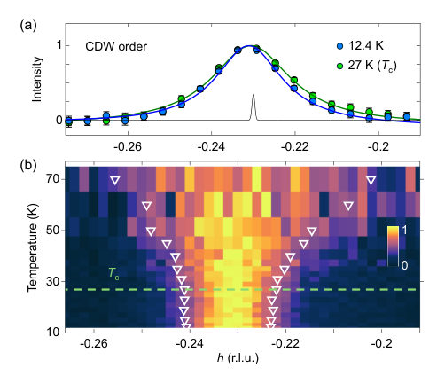
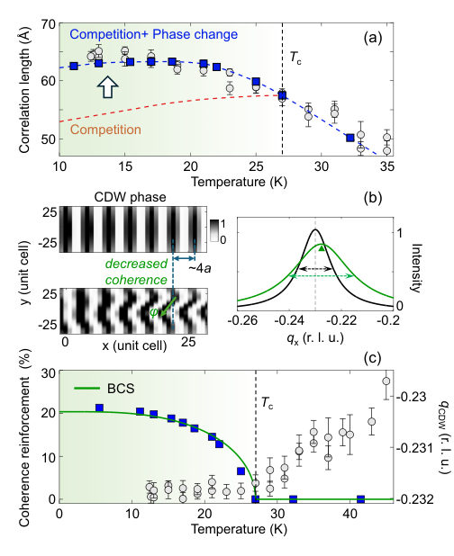
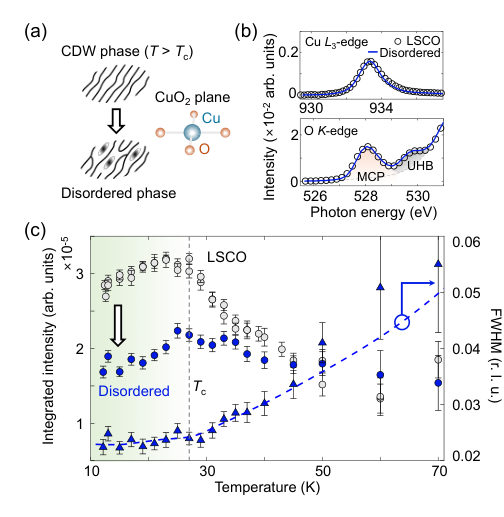
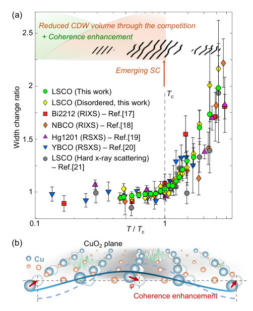
Summary. This paper challenges the long-held view that superconductivity and charge-density-waves are purely competitive in cuprates. It demonstrates that while superconductivity reduces the strength of the CDW, it simultaneously enhances its phase coherence. This suggests a more complex, intertwined relationship between these two fundamental electronic orders.
Why it may be interesting. not directly relevant
Main problem. The study investigates whether superconductivity in high-Tc cuprates only suppresses charge-density-wave (CDW) amplitude or if it also influences the CDW phase coherence.
Main result. Superconductivity reinforces CDW phase coherence by narrowing the CDW peak width and stabilizing the wavevector, even while suppressing the CDW amplitude.
Method. High-statistics Resonant Soft X-ray Scattering (RSXS) at the Cu L3-edge and O K-edge, combined with a coherence-sensitive momentum-profile analysis and a BCS-like growth model.
Model / system. The primary system is a La-based cuprate (LSCO) with x=0.115, compared against Bi-, Hg-, Y-, and Nd-based cuprates. The study also utilizes an aged LSCO crystal to explore a disorder-dominated regime.
Key observables. CDW peak FWHM (delta q_obs), correlation length (xi), integrated intensity (CDW volume), and CDW wavevector (q_CDW).
Important parameters / regimes. Temperature (transition at Tc = 27 K), carrier concentration (x=0.115), and the distinction between domain-size effects and intrinsic phase coherence.
Assumptions / limitations. The analysis assumes a liquid-crystalline framework of stripe order where amplitude and phase fluctuations are decoupled.
Figures summary. Figure 1(a) shows a comparison of CDW momentum profiles at Tc (27 K) and lower temperatures.
Paper structure. The paper introduces the competition paradigm, describes the experimental setup and the use of aged crystals for disorder studies, presents the RSXS results showing peak narrowing, compares these findings across different cuprate families to demonstrate universality, and concludes with the implications for an intertwined order paradigm.
For decades, superconductivity in high-Tc cuprates has been viewed as a competitor that suppresses charge-density-wave (CDW) order by reducing its amplitude and spatial extent. Here, we show that this picture is incomplete, as superconductivity is accompanied by a systematic enhancement of CDW phase coherence across multiple cuprate families. Using resonant soft x-ray scattering combined with a coherence-sensitive momentum-profile analysis, we uncover a BCS-like growth of phase coherence below Tc, which phenomenologically manifests as the absence of CDW peak broadening and near-perfect wave-vector locking. This enhancement remains visible even in a disorder-dominated regime created by long-term crystal aging and follows a common trend when compared with published data on Bi-, Hg-, Y-, and Nd-based cuprates. These results indicate that superconductivity reshapes CDW order in two distinct ways, suppressing its amplitude while strengthening its phase coherence, and reveal an additional phase-level interplay with lattice coupling in high-Tc cuprates.
Authors: D. N. Garzon, Leonel Cabrera-Loor, Jacopo Gliozzi, Marco Fronzi, Catherine Stampfl, Henry P. Pinto
Type: theory · Category: other · PDF: https://arxiv.org/pdf/2605.11183v1
Analysis basis: full PDF text, analyzed in chunks
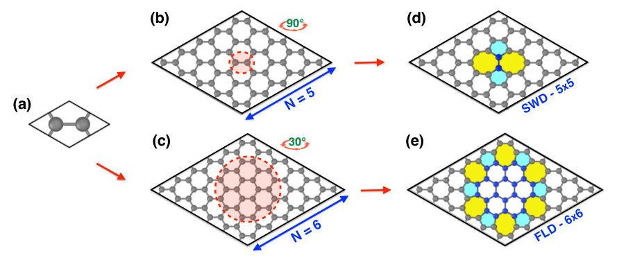
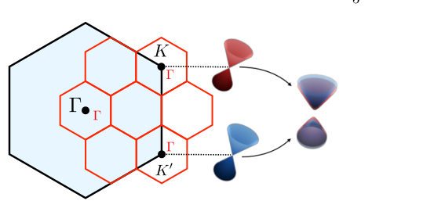
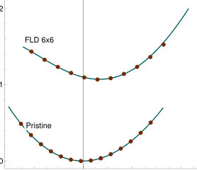
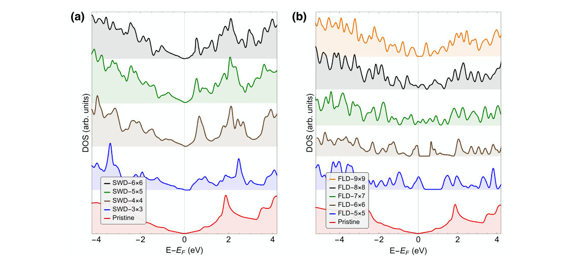
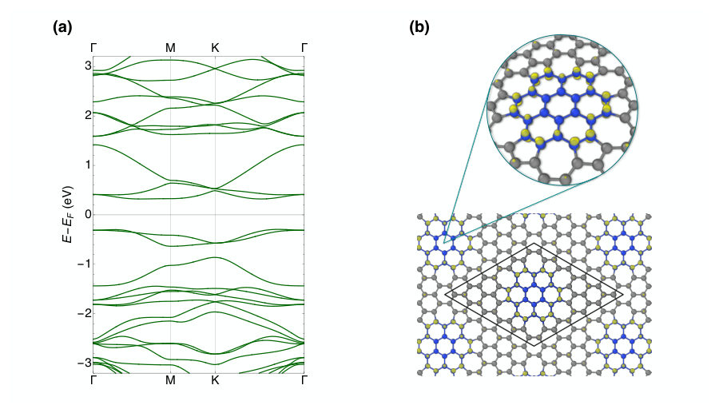
Summary. This paper demonstrates that periodic topological defects in graphene can be used to engineer a tunable electronic band-gap. By arranging defects such that the superlattice periodicity is a multiple of three, the K and K' Dirac points fold onto the same momentum, allowing for a predictable gap opening. This provides a framework for designing graphene-based nanoelectronic devices.
Why it may be interesting. not directly relevant
Main problem. Understanding how periodic topological defects in graphene can be used to predictably open and control an electronic band-gap.
Main result. The authors establish a selection rule where a band-gap opens only when the superlattice periodicity N is a multiple of three, due to Brillouin-zone folding and intervalley coupling.
Method. First-principles Density Functional Theory (DFT) using r2SCAN and HSE06 functionals, supported by tight-binding models and DFTB+ for large-scale simulations.
Model / system. Graphene superlattices containing periodic arrays of Stone-Wales (SWD) and flower-like (FLD) topological defects.
Key observables. Band-gap magnitude, density of states (DOS), projected density of states (PDOS), and simulated STM images.
Important parameters / regimes. Defect separation (determined by N), lattice symmetry, and the dilute-defect limit.
Assumptions / limitations. The study uses idealized, periodic defect arrays and assumes that the electronic properties are primarily governed by the reduction of translation symmetry.
Figures summary. Figure 1 shows the construction of SWD and FLD supercells; Figure 2 illustrates the Brillouin-zone folding mechanism; supplementary figures show k-space refinement and convergence tests.
Paper structure. The paper introduces the problem of graphene's lack of a band-gap, describes the construction of defect superlattices, presents DFT and tight-binding results regarding symmetry-guided gap opening, and concludes with a predictive framework for band-gap engineering.
Graphene lacks an intrinsic band-gap, which limits its use in electronic applications. Here we demonstrate that periodic arrays of topological defects can open and control a band-gap in a predictable manner governed by defect spacing and lattice symmetry. Using first-principles density functional theory calculations supported by tight-binding models, we investigate graphene superlattices containing Stone-Wales and flower-like defects over a range of $N \times N$ periodicities, where $N$ determines the defect separation. We show that band-gap opening occurs only when translation symmetry is reduced in a specific way: for supercells with $N$ a multiple of three, Brillouin-zone folding brings the Dirac cones at $K$ and $K'$ to the same momentum in the reduced Brillouin zone. In particular, flower-like defect superlattices produce larger and tunable band-gaps, whose magnitude decreases systematically with increasing defect separation and approaches zero in the dilute-defect limit. These results establish a predictive framework for band-gap engineering in defect-patterned graphene and clarify the microscopic mechanism underlying gap formation in periodically reconstructed lattices.
Authors: Yi Liu, Jason R. Trelewicz, Timothy J. Rupert
Type: both · Category: other · PDF: https://arxiv.org/pdf/2605.11175v1
Analysis basis: full PDF text, analyzed in chunks
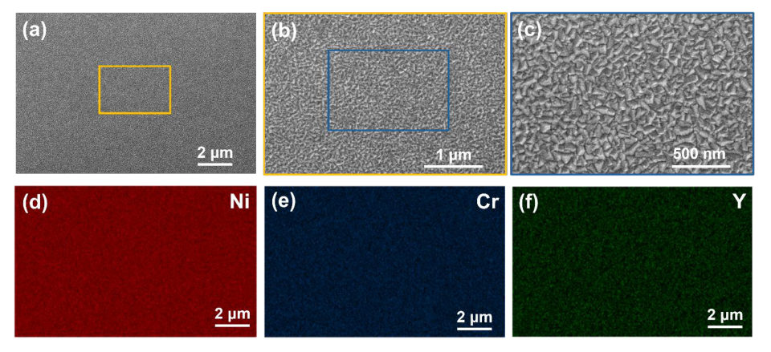
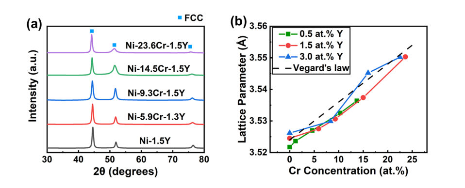
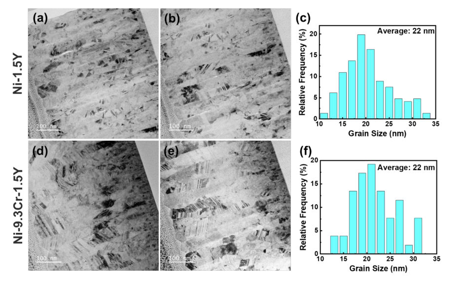
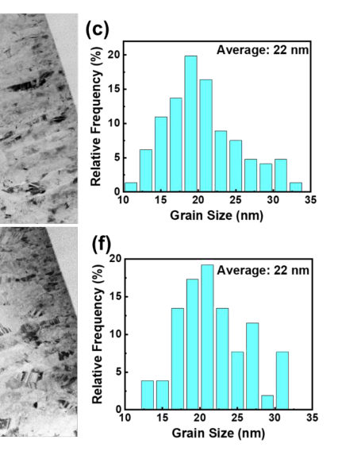
Summary. This paper demonstrates a strategy to achieve extreme hardness in nanocrystalline Ni-Cr-Y alloys by simultaneously doping the grain interior and grain boundaries. By using Yttrium to pin grain boundaries, the researchers suppressed grain boundary sliding, allowing Chromium-induced solid solution strengthening to reach much higher levels. This approach resulted in a hardness of 11.0 GPa, one of the highest reported for single-phase Ni-based alloys.
Why it may be interesting. not directly relevant
Main problem. Investigating how the synergistic doping of grain interiors (via Cr) and grain boundaries (via Y) can be used to control deformation mechanisms and achieve extreme hardness in nanocrystalline Ni-based alloys.
Main result. The ternary Ni-Cr-Y alloy achieved a record hardness of 11.0 GPa by using Y to suppress grain boundary sliding and rotation, thereby extending the range of Cr-induced solid solution strengthening.
Method. The study uses magnetron co-sputtering to fabricate thin films, nanoindentation and AFM to probe mechanical properties and surface morphology, and TEM/STEM with EDS to analyze grain structure and chemical segregation.
Model / system. Nanocrystalline Ni-Cr-Y thin films with a single-phase FCC structure and grain sizes of approximately 20-30 nm, where Cr acts as a lattice solute and Y acts as a grain boundary segregant.
Key observables. Hardness (GPa), lattice parameter, grain size, dislocation-mediated plasticity, grain boundary sliding, and grain rotation.
Important parameters / regimes. Cr and Y concentrations (at.%), grain size (20-30 nm), and effective dislocation obstacle spacing (L_eff).
Assumptions / limitations. Cr is assumed to be a lattice-soluble solute, Y is assumed to be a grain boundary segregant, and the substrate influence on hardness is assumed to be negligible.
Figures summary. Fig 1: SEM and EDS maps of grain morphology and chemistry; Fig 2: XRD patterns and lattice parameter vs. Cr content; Fig 3: TEM grain size distribution; Fig 4: STEM/EDS analysis of Y segregation; Fig 5: Hardness vs. Cr concentration; Fig 6: Hardness plateau vs. Y concentration; Fig 7: Comparison with NC-SSS models; Fig 9: AFM topography of indentation pile-up; Fig 10: TEM of deformed grain structures.
Paper structure. The paper introduces the problem of nanocrystalline strength, describes the fabrication and characterization of Ni-Cr-Y films, analyzes the individual and synergistic effects of Cr and Y on hardness and deformation mechanisms, compares results to theoretical models, and concludes with the implications for alloy design.
Solid solution addition and grain boundary segregation have been independently shown to enhance the strength of nanocrystalline alloys. In the present study, the synergy between these two effects is investigated in nanocrystalline Ni-Cr-Y sputtered films through systematic variation of alloying element contents with grain size kept constant. Cr is introduced into a solid solution and serves to strengthen the lattice, while Y segregates to the grain boundaries to stabilize these features. Nanoindentation is used to probe hardness, with unexpected trends and very high values observed. Cr additions led to nanocrystalline solid solution strengthening, yet saturation was observed at higher concentrations due to the emergence of grain boundary dominated processes, as evidenced by pile-up morphologies containing slip steps and grain rotation. Y segregated to the grain boundaries, enhancing boundary-mediated strengthening by pinning the dislocations and suppressing dislocation emission, grain boundary sliding, and grain rotation processes. With increasing Y concentration, the nanocrystalline solid solution strengthening effect induced by Cr addition becomes weaker. This phenomenon can be attributed to a reduced dislocation bowing distance caused by dopant pinning. Most notably, the strongest ternary Ni-Cr-Y alloy exhibited a hardness of 11.0 GPa, among the highest hardness values reported for single-phase Ni-based alloys. These findings highlight how tuning grain and grain boundary chemistry offers a viable strategy to control dislocation mechanics and improve the strength of nanocrystalline metals.
Authors: Zhengqing Cai, Zijing Li, Shidong Feng, Limin Wang, Riping Liu
Type: experiment · Category: disordered systems and neural networks · PDF: https://arxiv.org/pdf/2605.11729v1
Analysis basis: full PDF text, analyzed in chunks
Summary. This paper demonstrates a method to simultaneously increase the strength and ductility of Ti-based metallic glasses by adding small amounts of Aluminum. This is achieved by modulating the short-range order of the glass, resulting in a new record for specific strength in this class of materials.
Why it may be interesting. not directly relevant
Main problem. The intrinsic strength-plasticity trade-off in Ti-based bulk metallic glasses (BMGs) prevents their use in high-performance structural applications.
Main result. By microalloying with 3 at.% Al, the researchers achieved a record-breaking specific strength of 5.34 x 10^5 N*m/kg and a plastic strain of 13%, breaking the traditional strength-plasticity limitation.
Method. Arc melting and copper mold suction casting were used for synthesis, followed by XRD, DSC, Archimedes density measurements, and uniaxial compression testing.
Model / system. A series of Ti-based bulk metallic glasses with the chemical formula ((Ti40Zr40Ni20)72Be28)100-xAlx, designed based on a quasicrystal-derived structural heredity.
Key observables. Glass transition temperature (Tg), crystallization temperature (Tx), supercooled liquid region width (delta Tx), yield strength, plastic strain, and specific strength.
Important parameters / regimes. Aluminum atomic percentage (x ranging from 1.5 to 7.5 at.%), density, and atomic size mismatch.
Figures summary. Figure 1 shows XRD patterns and DSC curves for structural verification; Figure 2 presents uniaxial compression stress-strain curves; Figure 3 displays SEM images of fracture surfaces and shear bands; Figure 4 compares density, specific strength, and plasticity across various alloy systems.
Paper structure. The paper introduces the strength-plasticity trade-off, describes the synthesis and characterization of Al-microalloyed Ti-based BMGs, analyzes the thermal and mechanical properties, proposes a deformation mechanism based on structural heterogeneity, and concludes with future directions.
Achieving a balance between low density, high strength, and good ductility remains a major challenge in the development of structural materials. Ti-based bulk metallic glasses (BMGs) have attracted considerable attention due to their exceptionally high specific strength. However, the intrinsic strength-plasticity trade-off has hindered their practical applications. Based on a quasicrystal-derived structural heredity and minor-element microalloying, this work realizes a synergistic enhancement of specific strength and plasticity in Ti-based BMGs. The resulting ((Ti_{40}Zr_{40}Ni_{20}){72}Be){97}Al, establishing a new record for Ti-based BMGs, along with a plastic strain of 13\%, breaking through the traditional strength-plasticity limitation of BMGs. Structural analyses show that Al microalloying effectively inherits and modulates the short-range order derived from quasicrystalline structures, thereby achieving an observed synergistic enhancement in both strength and plasticity. This work provides new insights into composition design and lightweight structural applications of Ti-based BMGs.} BMGs demonstrate an ultrahigh specific strength of 5.34 \times 10^5 \text{ N}\cdot\text{m}\cdot\text{kg}^{-1
Authors: Anda Elena Stanciu, Johann Fischbacher, Markus Gusenbauer, Alexander Kovacs, Harald Oezelt, Joachim Seland Graff, Patricia Carvalho, Anette Eleonora Gunnæs, Matej Zaplotnik, Espen Sagvolden, Spyros Diplas, Thomas Schrefl
Type: both · Category: disordered systems and neural networks · PDF: https://arxiv.org/pdf/2605.11982v1
Analysis basis: full PDF text, analyzed in chunks
Summary. This paper presents a computational framework using micromagnetic simulations and machine learning to optimize the magnetic properties of Alnico magnets. By exploring the interplay between nanostructure, grain alignment, and material properties, the authors provide a roadmap for designing high-performance, rare-earth-free permanent magnets.
Why it may be interesting. not directly relevant
Main problem. Optimizing the magnetic performance (coercivity, remanence, and energy density) of Alnico magnets by tailoring their nanostructure, grain alignment, and intrinsic material properties.
Main result. The study identifies that optimal magnetic properties are achieved through specific rod diameters, aspect ratios, and inter-rod spacing, and demonstrates that a multi-layer perceptron can accurately predict these properties.
Method. Finite element micromagnetic simulations are combined with analytical modeling of stray fields and a multi-layer perceptron (MLP) regressor trained on simulation data.
Model / system. The system consists of Alnico alloys composed of magnetic nanorods (Fe-Co-rich phase) embedded in a non-magnetic matrix, modeled as both single-rod and multi-rod ensembles with varying grain orientations.
Key observables. Coercivity (Hc), remanent magnetization (Mr), maximum energy density product ((BH)max), and saturation magnetization (Ms).
Important parameters / regimes. Rod diameter, aspect ratio, inter-rod spacing, packing fraction (p), grain misalignment angle, and magnetocrystalline anisotropy constant (K1).
Assumptions / limitations. The rods are assumed to be exchange-decoupled; the far-field magnetic interactions are treated using a mean demagnetizing background field approximation.
Figures summary. Schematics of rod geometries and grain ensembles; SEM/STEM/EBSD microscopy images of Alnico microstructure; demagnetization curves and B-H loops; plots showing magnetic properties as functions of rod dimensions, packing fraction, and material parameters.
Paper structure. The paper begins with experimental characterization of a reference Alnico sample, progresses to micromagnetic simulations of single and multi-rod systems to study shape and interaction effects, applies statistical modeling for grain ensembles, and concludes with a machine learning approach for property prediction.
Alnico magnets have gained renewed interest in the search for rare-earth free permanent magnets due to their high thermal stability and magnetisation. However, the limited coercivity of these shape-anisotropy-based alloys constrains their performance. Starting from a reference Alnico sample, we realised a finite elements micromagnetic study of exchange-decoupled rods by varying their dimensions and interrod spacing across those observed experimentally. We computed the hysteresis properties by progressing from micromagnetic simulations of a small number of rods within the magnetostatic field of their neighbours to large systems treated statistically based on the distribution of orientations of the grains. We compared the coercivity of an isolated rod with that of the exchange-decoupled system to highlight the effect of magnetostatic interactions. We computed analytically the stray field acting on a single rod as a consequence of its surrounding rods in order to confirm the scaling of the coercivity with the packing fraction p. We explored how intrinsic material properties influence magnetic behaviour by examining materials with different magnetocrystalline anisotropy constants and saturation polarisation values. Results from several hundred simulations were used to train a multi-layer perceptron regressor and predict the magnetic properties as function of the dimensions of the rods, interrod spacing and orientation of the grains. With this approach, we highlight the underlying trends by which nanoscale structuring, intrinsic material properties and grain alignment can be tailored to improve the magnetic properties of Alnico alloys.
Authors: Tian Yuan, Yang Qi
Type: theory · Category: other · PDF: https://arxiv.org/pdf/2605.11655v1
Analysis basis: full PDF text, analyzed in chunks
Summary. This paper provides a rigorous mathematical framework for classifying topological phases of free fermions under general symmetries. By reducing the topological problem to an algebraic decomposition problem, the authors enable the explicit construction of model Dirac Hamiltonians and provide a computational tool for these calculations.
Why it may be interesting. not directly relevant
Main problem. The paper seeks a systematic topological classification of gapped free fermionic systems (like topological insulators and superconductors) under complex symmetries, including crystalline, magnetic, and antilinear symmetries.
Main result. The authors prove that free fermionic systems form a genuine G-Omega-spectrum and establish an isomorphism between the algebraic classification via Wedderburn-Artin decomposition and the topological classification via K-theory.
Method. The work utilizes an algebraic approach involving Z2-graded algebras, Clifford algebras, and the Wedderburn-Artin decomposition, supplemented by a developed GAP software package for automated computation.
Model / system. The study focuses on (q+1)-dimensional gapped free fermionic systems, specifically modeling Dirac Hamiltonians and their mass terms within a framework of G-equivariant vector bundles over a representation sphere.
Key observables. Topological invariants, Frobenius-Schur indicators, and the structure of the division algebra D.
Important parameters / regimes. Symmetry group G, 2-cocycles (omega), and the Z2-grading of the algebra.
Assumptions / limitations. The classification focuses on strong topological phases and assumes the existence of an energy gap to partition the Hilbert space.
Paper structure. The paper moves from defining the symmetry algebra and classifying spaces to establishing the theoretical foundation for computation, followed by the implementation of the GAP package and an appendix with explicit examples.
Research on topological phases of matter is a core field in modern condensed matter physics. Free fermion systems, such as topological insulators and superconductors, have been studied using the "Tenfold Way" and K-theory. Building on Kitaev's idea of $Ω$-spectrum and classifying space, as well as Freed-Moore's K-theory, this work demonstrates that free fermionic systems form a genuine $G$-$Ω$-spectrum and clarifies its connection to several distinct classification schemes appearing in the physical literature. By introducing the $\mathbb{Z}_2$-graded algebra $A_{\mathrm{sym}}^V$, the classification problem for systems with general symmetries, including antilinear symmetries, antisymmetries, projective representations, and point group symmetries, is turned into an extension problem in representation theory. To solve this, a computational method for the $\mathbb{Z}_2$-graded Wedderburn-Artin decomposition of $A_{\mathrm{sym}}^V$ is developed. This decomposition not only yields a classification but also enables the explicit construction of the corresponding Dirac Hamiltonian. Furthermore, a GAP programming package has been developed to automate these calculations.
Authors: Dmitry Kobyakov
Type: theory · Category: other · PDF: https://arxiv.org/pdf/2605.11216v1
Analysis basis: full PDF text, analyzed in chunks
Summary. This paper develops an extended mean-field theory to describe the complex vortex structures in the superfluid-superconducting mixture of a neutron star's outer core. It specifically addresses the interplay between neutron and proton components through entrainment and temperature-dependent pairing gaps. The results show that standard approximations like the London model fail to accurately describe neutron vortices in this regime.
Why it may be interesting. not directly relevant
Main problem. The paper aims to characterize the quantum vortex states in the outer core of neutron stars by accounting for the pressure and temperature dependence of superfluid and superconducting parameters, specifically when critical temperatures for protons and neutrons are not equal.
Main result. The study finds that superfluid entrainment increases the neutron vortex core size and decreases the effective magnetic penetration depth, and demonstrates that the London approximation is invalid for neutron vortices throughout the outer core.
Method. The author extends an existing mean-field theory using a Ginzburg-Landau-like framework, incorporating effective chiral field theory for density dependence and empirical temperature-dependent functions for the pairing gaps.
Model / system. The system is the outer core of a neutron star, modeled as a mixture of superfluid neutrons and superconducting protons. The model uses an energy functional that includes magnetic energy, kinetic energies, condensation energy, and superfluid entrainment effects.
Key observables. Neutron and proton vortex core radii, effective magnetic penetration depth, pairing gap energy, and thermodynamic critical magnetic field.
Important parameters / regimes. Critical temperatures (Tcp, Tcn), pairing gaps (delta_alpha0), scaled temperature (tau_alpha), entrainment parameter (cnp), and baryon density (nb).
Assumptions / limitations. The model assumes S-wave pairing for both species, neglects triplet neutron superfluidity (P-wave) effects, assumes the matter is isothermal, and assumes the total nucleon density remains fixed.
Figures summary. Figure 1 shows critical temperatures as a function of baryon density; Figure 2 displays the scaled pairing gap for neutron matter; Figure 3 shows dimensionless coefficients and the thermodynamic critical field; Figure 4 compares various characteristic lengths like core radii and penetration depths.
Paper structure. The paper begins by defining the thermodynamic framework and energy functional, moves to establishing the pressure and temperature dependence of the pairing gaps, derives the dimensionless equations of motion for the vortex structure, and concludes with a numerical evaluation of characteristic lengths and the validity of the London approximation.
Purpose: Characterize superfluid-superconducting vortex states at arbitrary pressures with $T_{cp}\neq T_{cn}$, assuming both proton and neutron mean-fields are formed by spin-0 Cooper pairs. Method: The existing mean-field theory is extended to account for $T_{cp}\neq T_{cn}$. The pressure dependence of the pairing gap energy $Δ_{\alpha0}$ is quantitatively established on the basis of the effective chiral field theory. To link $T_{cα}$ with $Δ_{\alpha0}$, I use the weak-coupling result $T_{cα}\approx0.57Δ_{\alpha0}$. A quadratic scaled-temperature ($T/T_{cp}$) dependence of the thermodynamic magnetic field is postulated in analogy with pure superconductors. The $T/T_{cα}$-dependence of the gap $Δ_{αT}$ is inferred from the many-body approximations for the pure neutron matter. Results: An empirical $T/T_{cα}$-dependence for the mean-field is constructed to account for the interplay between the condensation and the magnetic energies. The superfluid entrainment is found to increase the size of the vortex core and to decrease the effective magnetic penetration depth. The size of the neutron vortex core is found to be larger than the magnetic penetration depth in the outer core. Conclusions: The usual approximation of infinitely thin vortex line (the London's approximation) for the neutron vortex is found to be irrelevant in the entire outer core and for the proton vortex is found to be limited to vicinity of the crust-core transition. The developed mean-field theory paves the way to study the vortex microscopic structure, the angular momentum, the magnetization and the vortex-fluxtube interaction energy.
Authors: Chengcheng Xiao, Nicholas Bristowe, Arash A. Mostofi
Type: theory · Category: other · PDF: https://arxiv.org/pdf/2605.11724v1
Analysis basis: full PDF text, analyzed in chunks
Summary. This paper establishes a theoretical framework based on multicentered bonding to explain how electrons localize in the interstitial spaces of crystals. By introducing a new descriptor (Ze), the authors enable the high-throughput discovery of new electride materials and provide a unified description for organic electrides and F-center defects.
Why it may be interesting. not directly relevant
Main problem. The lack of a general theoretical framework to explain the origin of electron localization at interstitial sites in electrides and the absence of a predictive descriptor for discovering new electride materials.
Main result. The authors develop a 'Multicentered Bonding Theory' and a new figure-of-merit (Ze) for high-throughput discovery, successfully identifying new potential electrides like Hf2Au and demonstrating that the theory extends to organic electrides and F-center defects.
Method. The study uses a combination of analytical LCAO models, Density Functional Theory (DFT) calculations, and an automated high-throughput screening workflow applied to the Materials Project database, utilizing Electron Localization Function (ELF) and Bader analysis.
Model / system. The system focuses on electrides (materials with electrons in interstitial regions), including prototypical examples like Ca2N and high-pressure Na, as well as organic electrides and F-center defects in MgO, modeled via multicentered bonding orbitals.
Key observables. Electron Localization Function (ELF) maxima, integrated basin charge (Q_ELF), critical cage size (bc), and the electride figure of merit (Ze).
Important parameters / regimes. The ratio of interstitial region size to orbital size (b/r0), the principal quantum number (n), and the critical cage size (bc).
Assumptions / limitations. The analytical model assumes a non-interacting Linear Combination of Atomic Orbitals (LCAO) approximation and uses hydrogenic ns-orbitals to approximate the tails of atomic wavefunctions.
Figures summary. Figures include energy level diagrams for orbital localization, charge density and band structure projections for Ca2N and hP4-Na, a workflow for the Ze descriptor, and structural/ELF visualizations for Hf2Au and organic electrides.
Paper structure. The paper introduces the problem of electride identification, develops an analytical multicentered bonding theory, validates it with DFT on known electrides, presents a high-throughput screening workflow and new candidates, and finally generalizes the framework to organic systems and point defects.
Electrides are materials with electrons localized at interstitial regions of the crystal lattice and have been identified as promising candidates for a variety of applications, including catalysis, electron emission, and superconductivity. We present a theoretical framework for the origin of interstitial electrons in electrides. We demonstrate that this theory can explain electride-like behavior in prototypical electrides, and we use it to develop descriptors for the high-throughput discovery of new inorganic electride candidates from first principles. We also show that the same concepts can explain electride-like behavior in other classes of material, including high-pressure electrides and organic electrides and, more broadly, provide an alternative understanding of F-center defects and solvated electrons.
Authors: M. Niţă
Type: theory · Category: other · PDF: https://arxiv.org/pdf/2605.11948v1
Analysis basis: full PDF text, analyzed in chunks
Summary. This paper explores a 1D hexagonal chain model that generalizes the SSH model, revealing that the complex unit cell leads to both flat bands and topological edge states. It demonstrates that the topological phase transition is sensitive to the system size and that edge states emerge due to interference effects within the hexagonal geometry.
Why it may be interesting. not directly relevant
Main problem. The study investigates the emergence of topological edge states and the nature of the phase transition in a one-dimensional molecular chain with a hexagonal unit cell.
Main result. The system exhibits a topological phase characterized by a winding number of 1 and exponentially localized edge states when the hopping ratio is below a critical value, with the transition point being dependent on the chain length.
Method. The author uses k-space representation, winding number calculations, and analytical continuation of the wave number into the complex plane to study periodic and open boundary conditions.
Model / system. A 1D molecular chain composed of hexagonal unit cells (resembling a nanowire of para-connected benzene molecules) described by a single-particle Hückel discrete Hamiltonian with alternating hopping parameters t1 and t2.
Key observables. Energy spectrum (dispersive and flat bands), winding number (topological invariant), and wavefunction localization/decay length.
Important parameters / regimes. Hopping ratio r (defined as sqrt(2)t1/t2 or t1/t2 depending on the section), critical ratio rc, and system length N.
Assumptions / limitations. The analysis assumes a single-particle Hückel model and considers finite-size effects where the critical transition point depends on N.
Figures summary. Fig 1: Schematic of the hexagonal chain; Fig 2: Visualization of flat-band state localization; Fig 3: Energy band evolution for different r regimes; Fig 4: Schematic of edge state localization; Fig 5: Plots demonstrating the change in real solutions for k; Fig 7: Comparison of bulk vs edge eigenvectors; Fig 8: Graphical representation of the Hamiltonian.
Paper structure. The paper introduces the hexagonal chain model, analyzes the energy spectrum and band structure under periodic boundary conditions, investigates the topological properties via winding numbers, extends the analysis to open boundary conditions to identify edge states, and discusses the size-dependent phase transition.
We study the eigenspectrum properties of a one-dimensional molecular chain composed of hexagonal unit cells. The system features two alternating hopping parameters, resulting in a rich energy spectrum with both dispersive and flat bands. By analyzing the model under periodic and open boundary conditions, we identify two insulating phases separated by a gap-closing transition controlled by the ratio of hopping amplitudes. In the topological phase, realized when the hopping ratio falls below a critical value, edge states emerge that are exponentially localized at the boundaries of finite chains.
Authors: Lilian Prodan, Donald M. Evans, Lukas Puntigam, 1 István Kézsmárki, Vladimir Tsurkan
Type: experiment · Category: strongly correlated electrons · PDF: https://arxiv.org/pdf/2605.11851v1
Analysis basis: full PDF text, analyzed in chunks
Summary. This paper identifies a universal scaling behavior in the magnetic susceptibility of the kagome ferromagnet Fe3Sn2 during its spin-reorientation transition. It demonstrates that magnetic isotherms collapse onto a single curve and links this phenomenon to the emergence of bubble-like magnetic textures. The findings highlight how the competition between anisotropy and dipolar interactions drives complex magnetic states.
Why it may be interesting. not directly relevant
Main problem. Understanding the physical origin of the isosbestic point in the differential magnetic susceptibility of the kagome ferromagnet Fe3Sn2 and the mechanism behind the emergence of complex magnetic textures near this point.
Main result. The study reveals a universal scaling behavior where susceptibility isotherms collapse onto a single temperature-independent curve with quadratic temperature corrections, alongside a transition from stripe-like to bubble-like magnetic domains near the isosbestic field.
Method. The researchers used bulk magnetization measurements, differential magnetic susceptibility (DMS) analysis via an isosbestic-invariance approach, and Magnetic Force Microscopy (MFM) for real-space imaging of spin textures.
Model / system. The system is the itinerant kagome ferromagnet Fe3Sn2, which undergoes a spin-reorientation transition between easy-plane, conical, and easy-axis magnetic states driven by the competition between magnetocrystalline anisotropy, dipolar interactions, and external fields.
Key observables. Differential magnetic susceptibility (DMS), magnetic domain patterns (stripe vs. bubble), and the isosbestic field (Hiso).
Important parameters / regimes. Magnetocrystalline anisotropy constants (K1, K2), demagnetizing coefficient (D), and the spin-reorientation temperature range (60 K to 130 K).
Assumptions / limitations. The analysis assumes a quadratic-in-temperature correction to the susceptibility and that the temperature dependence of the demagnetizing field is compensated by changes in the anisotropy field.
Figures summary. Figure 1 shows susceptibility isotherms and their scaling collapse; Figure 3 displays MFM images of the evolution from stripe to bubble domains; Figure 4 shows temperature-driven domain pattern evolution.
Paper structure. The paper introduces the spin-reorientation transition in Fe3Sn2, presents the discovery of universal scaling in susceptibility isotherms, details the MFM imaging of domain evolution, and concludes with a discussion on the competition between anisotropy and dipolar interactions.
We report universal behavior of the differential magnetic susceptibility (DMS) in the conical phase that mediates the spin-reorientation (SR) transition of the kagome ferromagnet Fe$_3$Sn$_2$. Within the SR temperature range, the DMS isotherms exhibit extremely narrow crossing regions, forming isosbestic points. Using an isosbestic-invariance analysis, we show that the isotherms collapse onto a single temperature-independent curve, revealing quadratic-in-temperature corrections to the susceptibility. Complementary field-dependent magnetic-force-microscopy measurements uncover evolution of spin textures from stripe-like domains at low fields to isolated bubble-like domains near the isosbestic field ($\sim 0.6$~T), a behavior not previously reported in bulk Fe$_3$Sn$_2$ within the conical state. These findings point to a universal mechanism for the emergence of complex magnetic textures near isosbestic points, driven by the competition between magnetocrystalline anisotropy, dipolar interactions, and external magnetic field.
Authors: Asiyeh Shokri, Yevgen Melikhov, Yevgen Syryanyy, Maryna Chernyshova, Iraida N. Demchenko
Type: theory · Category: other · PDF: https://arxiv.org/pdf/2605.12029v1
Analysis basis: full PDF text, analyzed in chunks
Summary. This study uses first-principles calculations to show that nitrogen-related defects in beta-Ga2O3 form stable complexes with intrinsic vacancies. Instead of providing p-type conductivity, these complexes create deep-level traps that hinder carrier transport, effectively promoting semi-insulating behavior.
Why it may be interesting. not directly relevant
Main problem. Investigating whether nitrogen-related defect complexes in beta-Ga2O3 can act as shallow acceptors for p-type conductivity or if they function as deep carrier traps.
Main result. Nitrogen atoms tend to co-localize, and while vacancies enhance N-N bonding, the resulting defect complexes create deep-level electronic states that act as charge-blocking centers rather than shallow dopants.
Method. First-principles calculations using Density Functional Theory (DFT) with the HSE06 hybrid functional and the Projector Augmented Wave (PAW) method within the VASP package.
Model / system. The physical system is beta-Ga2O3 (an ultra-wide band gap oxide semiconductor) containing nitrogen interstitials, substitutional nitrogen, and intrinsic gallium or oxygen vacancies.
Key observables. Defect formation energies, binding energies, charge transition levels, N-N bond lengths, Electron Localization Function (ELF), and Density of States (DOS).
Important parameters / regimes. Ga-rich and O-rich chemical potentials, Fermi level position, and N-2p/O-2p orbital hybridization.
Assumptions / limitations. The study focuses on nitrogen-vacancy interactions and excludes the potential influence of background hydrogen.
Figures summary. Figure 1 shows the correlation between total energy and N-N distance; Figure 5 displays the total and projected density of states for defect complexes; Figure 6 illustrates the spin density distribution around nitrogen and vacancy sites.
Paper structure. The paper introduces the problem of nitrogen doping in Ga2O3, details the DFT computational methodology, analyzes the structural stability and N-N bonding of various nitrogen-vacancy complexes, evaluates their electronic properties (DOS and charge transition levels), and concludes on their impact on carrier transport.
The formation and electronic properties of nitrogen-related defect complexes in $β-Ga_2O_3$ are investigated using first-principles calculations. Starting from the energetically favorable $N_{i9}-N_{OI}$ configuration, nitrogen atoms exhibit a strong tendency toward co-localization, leading to reduced $N-N$ separation. However, analysis of bond lengths and electron localization function shows that these configurations do not fully attain molecular $N_{2}$ character. The role of intrinsic defects is further examined by introducing oxygen and gallium vacancies. Vacancy-assisted configurations enhance local lattice relaxation and further decrease the $N-N$ distance. Formation energy calculations indicate that several vacancy-assisted complexes are thermodynamically favorable, while binding energy analysis confirms their stability against dissociation. Despite this, the density of states analysis reveals that all configurations introduce localized electronic states within the band gap. These states originate primarily from hybridized $N$-$2p$ and $O$-$2p$ orbitals and remain energetically separated from the band edges. Spin density analysis further confirms strong localization. Overall, these defect complexes act as deep trapping centers, limiting carrier transport in $β-Ga_2O_3$ and thereby promoting semi-insulating behavior and current blocking characteristics.